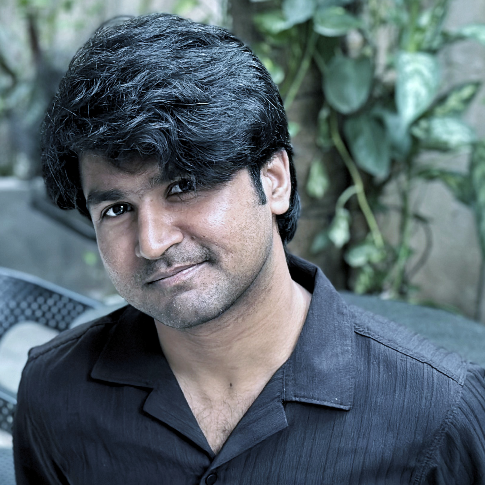
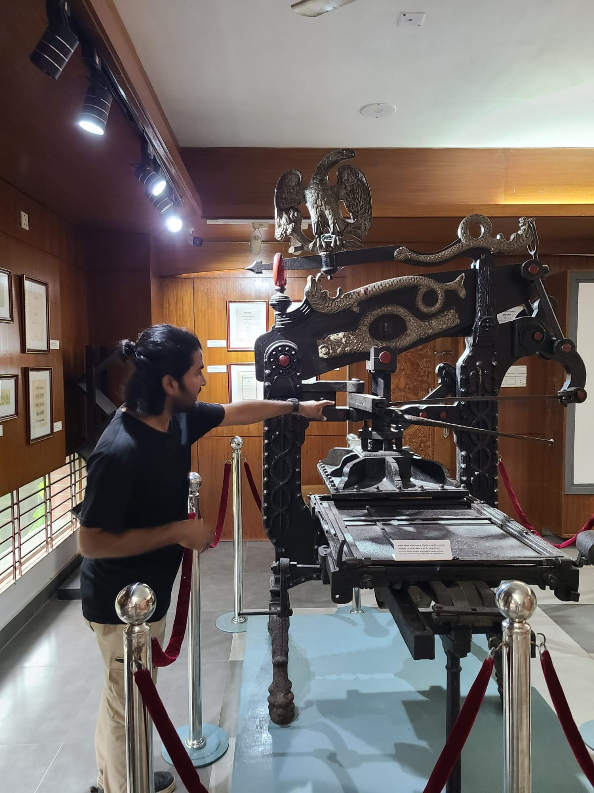
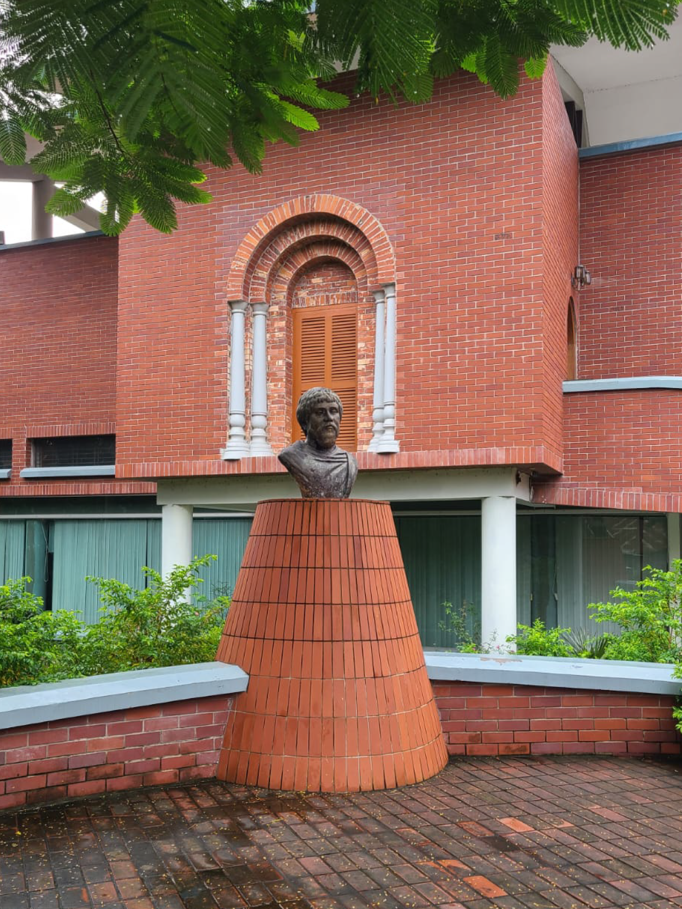
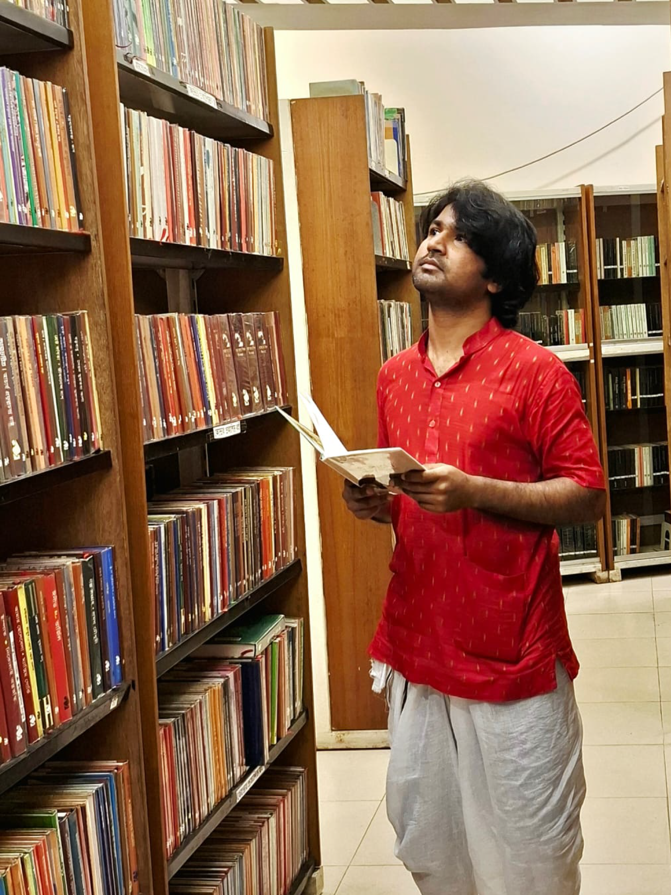
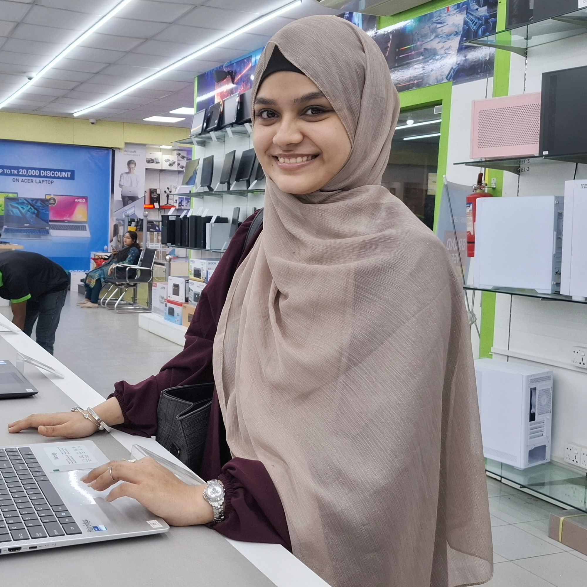

Meet Our Research Team
We are a group of passionate students united by our love of books in all their forms. Our diverse reading preferences and academic backgrounds have enriched this exploration of how print and digital books coexist in modern reading culture.
The same is true for great research!

Sohanur Rohman
Student ID: 1702500373
Role: Project Leader & Content Writer
Reading Preference: Print book enthusiast
Sohanur is studying Computer Science but remains a devoted traditionalist when it comes to reading. Despite working with technology daily, they appreciate the tactile experience of physical books and brought valuable insights about why print books remain relevant.
Contributions: Wrote the introduction and abstract sections, coordinated team meetings and timeline, conducted primary research on publishing industry trends, and managed overall project workflow.
Favorite Book: "Brother Karamazov" by Feodor Dostoevsky
Interests:Natural Language Processing, Tech Journalism, Astronomy and book collecting.
Fun Fact: Has a personal library of 200+ print books.

Sohanur inspects an 18th-century press machine preserved in Harinath Press Musium in Kumarkhali, Kushtia.

Harinath Press Musium in Kushtia, Bangladesh. Harinath Majumdar was a distinguished journalist of the 18th century. He made a special contribution to the history of printing in Bengal.

Sohanur likes to spend time in the library. He is having a wonderful time in the library of the Bishwa Sahitya Kendra, Dhaka.

Sadia Akhter
Student ID: 1702600454
Role:Web Designer & Multimedia Specialist
Reading Preference: Hybrid reader (20% print, 80% e-books)
Sadia is a Computer Science fresher. She likes to take photographs.
Favorite Book: "The Alchemist" by Paolo Coelho (owns both print and e-book versions!)
Ikramul Haque Niaz
Student ID:1702500404
Role:Research Analyst & Discussion Lead
Reading Preference: E-book and Print book
Ikramul Haque Niaz is a student of Business Informatics.
Contributions: Authored the discussion section analyzing advantages and disadvantages, researched academic studies on reading comprehension, compiled comparative data tables, and edited all content for clarity.
Interests: Web design, digital media, e-reading technology, UI/UX design, and sci-fi literature.
Alisha Ahmed
Student ID:1702500462
Role: Research Coordinator & Editor
Reading Preference: Format flexible (depends on the book)
Alisa is pursuing a degree in Business Informatics. They bring a unique perspective as someone who chooses format based on content—e-books for research and genre fiction, print for literary classics and special editions.
Contributions: Researched environmental impact studies, compiled references in IEEE format, wrote the conclusion section, proofread and edited all content, and ensured academic rigor throughout the project.
Interests: Comparative literature, publishing economics, environmental sustainability, and research methodology.
Our Reading Habits at a Glance
| Team Member | Format Preference | Books Read/Year | Favorite Genre |
|---|---|---|---|
| Sadia Akhter | Hybrid (both formats) | 15-20 | Contemporary Fiction |
| Sohanur Rohman | Print books | 35-40 | Classic Literature |
| Ikramul Haque | E-books | 50+ | Science Fiction |
| Alisa Ahmed | Context-dependent | 30-35 | Fantasy & Thrillers |
Our Collaborative Approach
This project exemplifies how diverse perspectives create richer understanding. Our varied reading preferences—from print purist to digital native—enabled us to explore this topic with genuine empathy for all viewpoints:
- Balanced Perspective: No format bias—we appreciate both print and digital
- Real Experience: Our conclusions aren't theoretical; we live this debate daily
- Complementary Skills: Technology expertise combined with literary passion
- Rigorous Research: Academic thoroughness meeting practical understanding
- Creative Presentation: Making research accessible and engaging
What We Learned
Beyond the research findings, this project taught us valuable lessons:
Sadia Akhter: "I discovered that my hybrid reading habit isn't unusual—it's actually the emerging norm among readers of all ages."
Sohanur: "While I still prefer print, I gained newfound respect for e-books' accessibility features and convenience. They're not the enemy of reading—they're expanding it."
Niaz: "I learned that print books offer values beyond practicality— they're cultural objects with emotional significance that digital can't fully replace."
Alisa: "The 'either/or' framing was always wrong. The future of reading is 'both/and,' with readers choosing what works best for each situation."
Acknowledgments
We extend our heartfelt thanks to:
- Our course instructor Mr. Niaz Makhdum for guidance and encouraging our passion for this topic
- UCSI University Library staff for helping us access research databases
- Local bookstores and libraries that allowed us to interview readers
- Survey participants who shared their reading preferences
- Publishing industry professionals who provided insights
- Our families and friends for supporting our research (and lending us their books!)
- Authors and publishers whose work makes reading—in any format—worthwhile
Contact Our Team
📧 Email: 1702500373@ucsiuniversity.edu.my
🏫 Course: BIC1234d Introduction to Internet Technologies
📅 Semester: January 2026
📚 Topic: E-books - Is This the End of Print Books?
"We're always happy to discuss books, reading formats, and the future of publishing!"